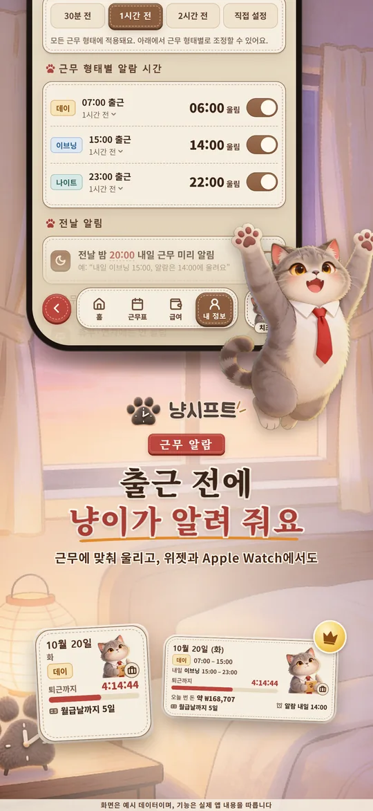
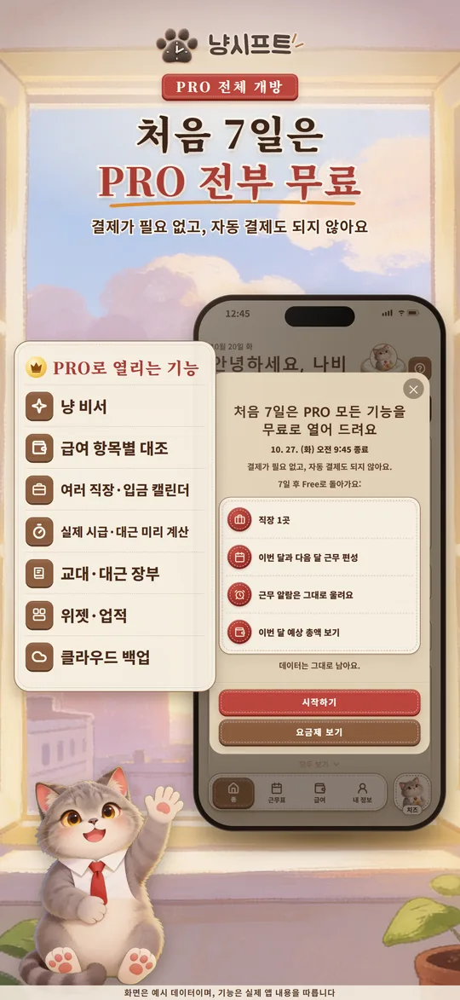

🎁 다운로드 후 처음 7일은 PRO 전체 이용


냥시프트는 간호사, 요양보호사, 공장, 경비, 요식업, 판매, 아르바이트 등 교대근무를 하는 사람을 위한 앱이에요. 근무만 입력하면 언제 출근하는지, 몇 시에 퇴근하는지, 이번 달에 대략 얼마를 받는지 알 수 있어요.




🎁 다운로드 후 처음 7일은 PRO 전체 이용: 모든 PRO 기능을 7일 동안 무료로 쓸 수 있어요. 결제할 필요가 없고 자동으로 결제되지도 않아요. 7일 후에도 기본 기능은 계속 무료로 쓰거나, 냥시프트 PRO를 구독할 수 있어요.

가격은 지역마다 다르며 App Store, Google Play에 표시된 금액이 기준이에요. 구독은 자동으로 갱신되고 스토어에서 언제든지 해지할 수 있어요.
계산 결과는 참고용이에요. 실제 급여는 회사 급여명세서를 기준으로 해 주세요.